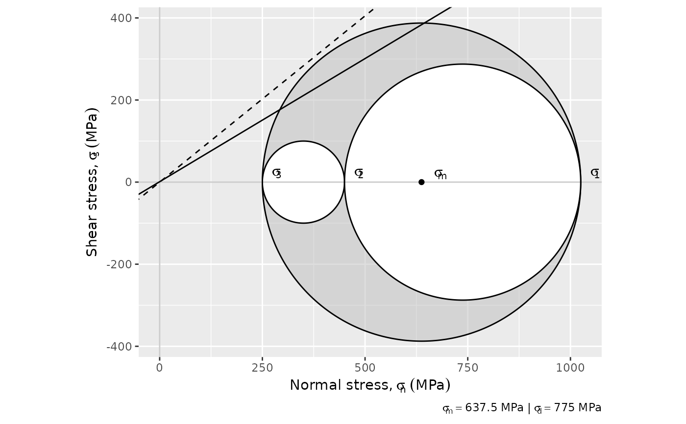

Plot Mohr Circle in ggplots
Usage
ggMohr(
sigma1,
sigma2,
sigma3,
coulomb = c(70, 0.6),
sliding = 0.81,
units = "MPa",
fill = "gray",
alpha = 0.5
)Arguments
- sigma1, sigma2, sigma3
numeric. Magnitudes of major, intermediate, and minor principal stresses
- coulomb
numeric 2 element vector. Coulomb criterion containing the cohesion and the coefficient of sliding: (
c(70, 0.6))- sliding
Sliding criteria (
0.81by default)- units
units of
sigma1,sigma2, andsigma3("MPa"by default).- fill
fill color of Mohr circle
- alpha
opacity of Mohr circle
Examples
ggMohr(1025, 400, 250)
#> Warning: is.na() applied to non-(list or vector) of type 'expression'
#> Warning: is.na() applied to non-(list or vector) of type 'expression'
#> Warning: is.na() applied to non-(list or vector) of type 'expression'
#> Warning: is.na() applied to non-(list or vector) of type 'expression'
